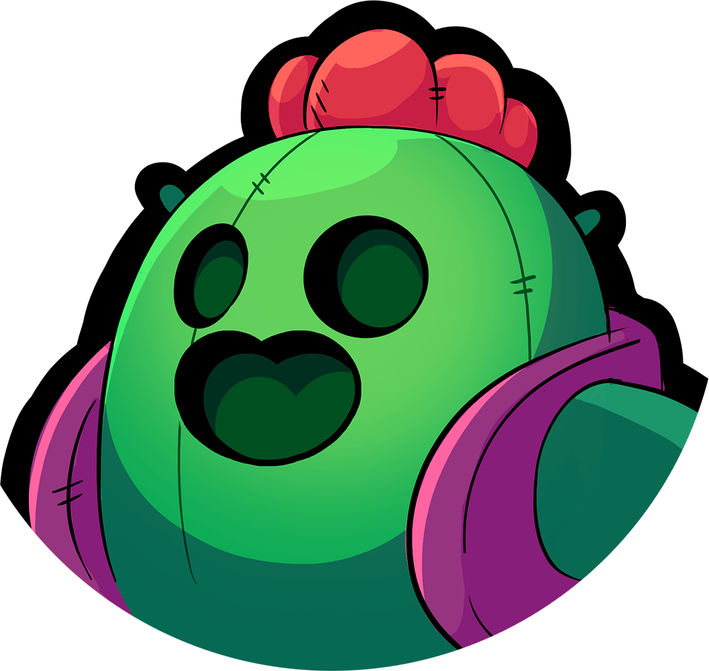
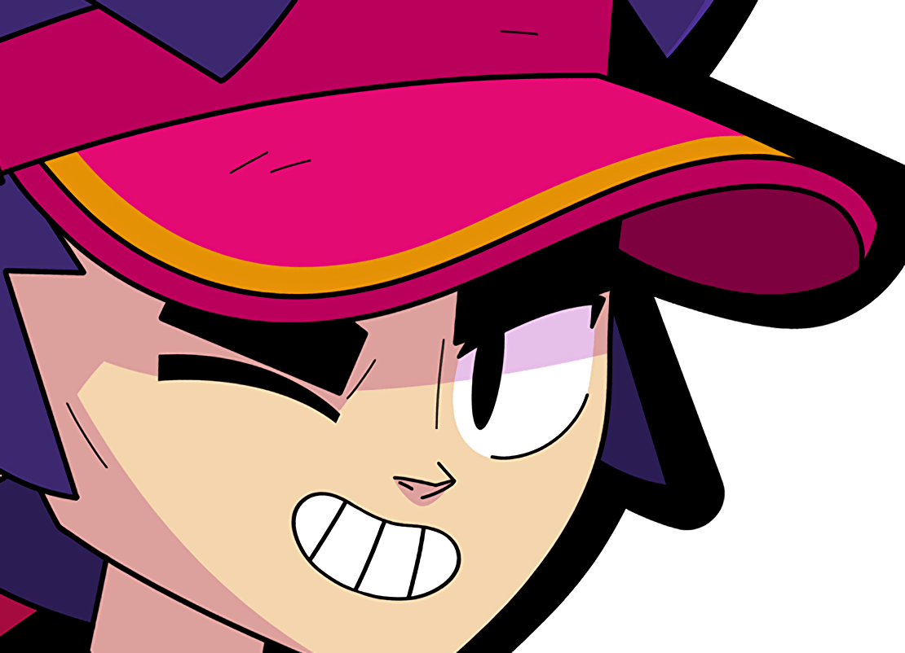
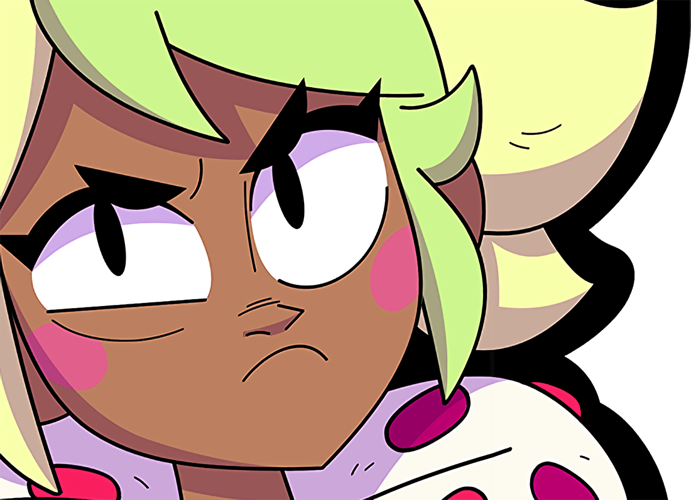
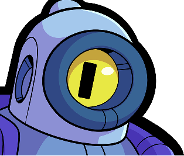
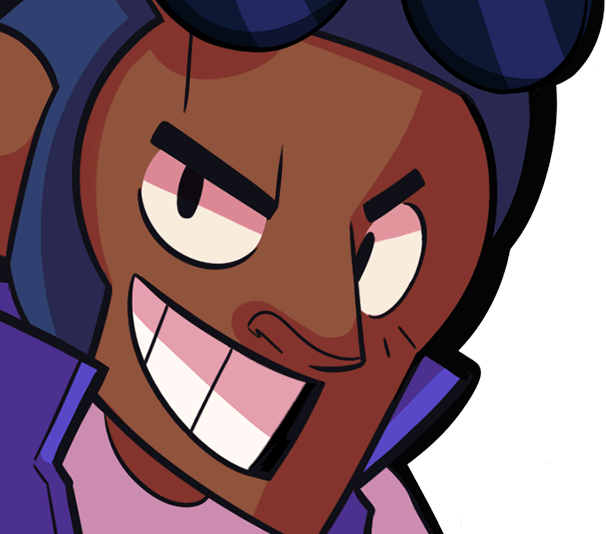

BRAWL STARS
Brawl Stars é um jogo de tiro multijogador gratuito para celulares iOS e Android, desenvolvido e publicado pela Supercell. O jogo foi lançado como beta em 15 de junho de 2017 e globalmente em 12 de dezembro de 2018.
Vamos ver qual o melhor brawler de cada raridade, usando a seguinte sequência: lendário, mítico, épico, super-raro e por último raro
Spike
O Spike é um Brawler do tipo “Tiro preciso” e é de raridade Lendária. Ele tem com pouca vida e especializado em lidar com inimigos agrupados. Seu Ataque e Super são ótimos para lidar com vários inimigos de uma só vez.

Clique aqui para saber mais!
Fang
O Fang é um personagem do tipo Algoz e de raridade Mítica, que tem uma quantidade de vida alta e causa bastante dano, tendo também uma velocidade de movimento rápida. Seu ataque é um chute que causa alto dano, mas é de curto alcance. Se ele não acertar um inimigo com seu chute, seu sapato voa, ganhando alcance extra, mas causando muito menos dano que o normal.

Clique aqui para saber mais!
Mandy
A Mandy é um personagem do tipo Tiro Preciso e de raridade Épica, sendo lançada no jogo com o Brawl Pass da 16ª Temporada! A sua aparência é de uma menina de cabelos loiros, carregando um cajado e usando coroa e capa e rainha.
Ela dispara guloseimas com um tiro preciso, sendo o maior alcance do jogo. E quando está parada ganha foco, aumentando consideravelmente o alcance do seu ataque.

Clique aqui para saber mais!
Rico
O Rico é um brawler do tipo “Tiro Preciso” e de raridade Super-Raro. Ele tem com pouca vida e dano moderado, mas ele é único por conta do seu ataque e super, ele usa balas que podem ricochetear nas paredes e continuar percorrendo o mapa. Quando apropriadamente utilizada, essa habilidade pode permitir que ele elimine os brawlers inimigos sem serem atingidos diretamente.

Clique aqui para saber mais!
Brock
Brock é um brawler do tipo Tiro preciso e raridade Raro. Ele é desbloqueado como uma recompensa na Trilha Estelar, podendo causar grandes danos se seus ataques forem direcionados com cuidado. Seus foguetes de longo alcance causam grandes danos em uma pequena área, mas ele tem um longo tempo de recarga e pouca vida, então é melhor da suporte na retaguarda a outros brawlers.

Clique aqui para saber mais!